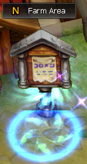
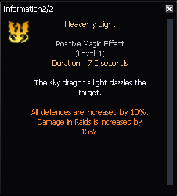

SP Upgrade
Upgrading +0 to +15
How to get scrolls?
You can get them in Maru raid boxes or you can buy them at the Alchemist.
How to get materials?
You can get them in some raid boxes or farm them in farm maps.
Note that scrolls will be used as long as you have enough materials in your inventory to try.
Upgrading +16 to +20
Upgrading from +16 to +20 works the same way except that it requires a new scroll and a new material.
You can obtain 20x Dragon Card Protection Scrolls after completing an Act4 raid.
The new material is Dragon Gem. You can craft them with Blood-Red Rubies at Dragon Gem NPC in Act4 Citadel (1x Blood-Red Ruby gives 5x Dragon Gems).
SP +20
After upgrading a SP +20, while attacking you have a 5% chance to activate the Dragon Blessing, which is basically a "stronger" Onyx effect.
To this Dragon Blessing, you can add an additional buff. To add a buff, you need to craft an Elemental Gemstone at the Elemental Gemstones NPC in Act4 Citadel. The buff will be activated when the Dragon Blessing appears.
Fire Dragon Gem

Celestial Dragon Gem
Ice Dragon Gem

{kind=link}